AnyPortrait > Manual > Rigging Modifier
Rigging Modifier
1.2.3
Rigging is the process of connecting bones to a mesh and making the mesh moveable by the bones.
In particular, setting weights to connect the vertices and bones of the mesh is the key point.
AnyPortrait's "Rigging Modifier" provides a variety of features for this rigging task.
This page introduces the basic usage and features of the Rigging Modifier.
This page is also covered in Getting Started 2.
See the next page for more details on how to rig in various cases and advanced features.
Adding Rigging Modifiers and Linking Vertices and Bones
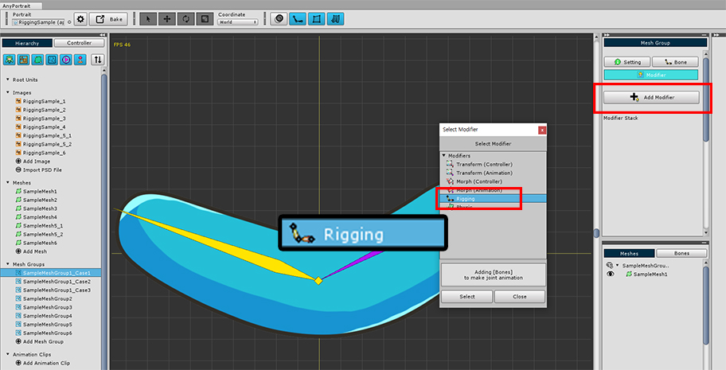
Select the mesh group and select the Modifier tab.
Press the Add Modifier button and select a Rigging modifier to add.
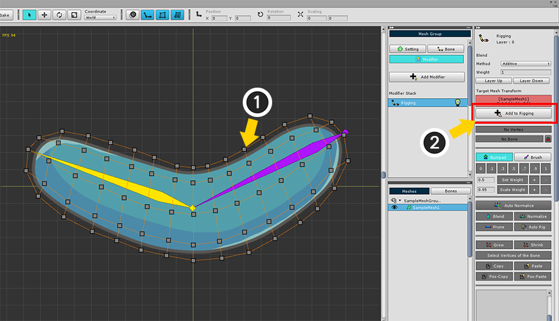
(1) Select the Mesh.
(2) Press the Add to Rigging button to register the mesh with the modifier.
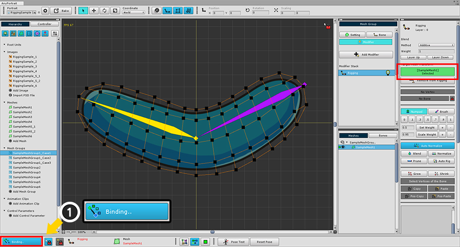
Rigging editing starts automatically when the mesh is registered with the modifier.
If the edit mode is not started, (1) press the Start Binding button to start editing. (Shortcut key: A )
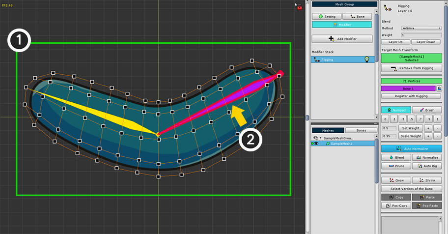
With the mesh selected, you need to select a bone and vertices.
For now, let's assign weights to all the vertices.
(1) Select all vertices by dragging the mouse or pressing Ctrl + A .
(2) Click the target bone.
Note that.
Right-click when you want to deselect.
The first right-click deselects the vertices, and the second right-click deselects the bones.
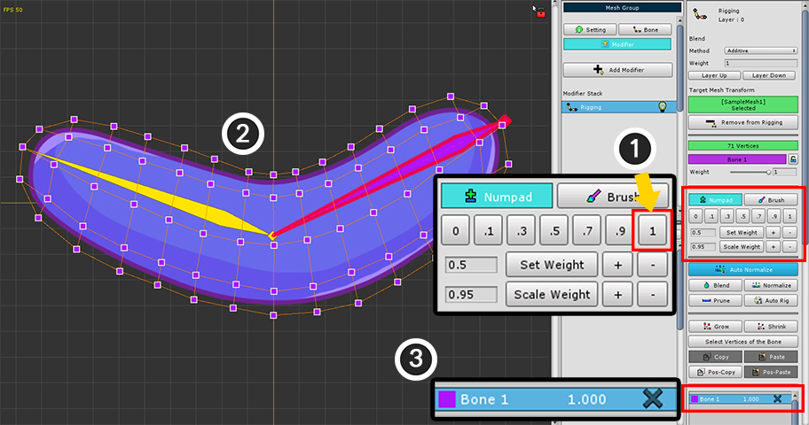
Now let's connect the bones with the selected vertices.
(1) Press "1" button on the weight tool.
(2) In the workspace, you will see the mesh color change to the bone color or red color. (The color depends on the option.)
(3) The selected bone (Bone 1) and the designated weight (1.0) are added to the bone rigging information.
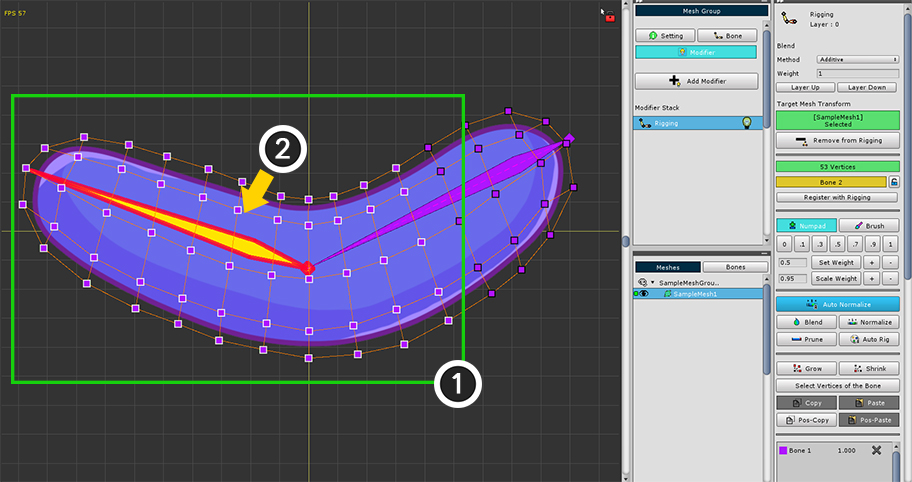
Let's connect the second bone and vertices.
In this step, select some vertices and set the weights.
(1) Drag the mouse to select the vertices. You can select additional vertices by pressing Ctrl or Shift .
(2) Click the second bone to select it.
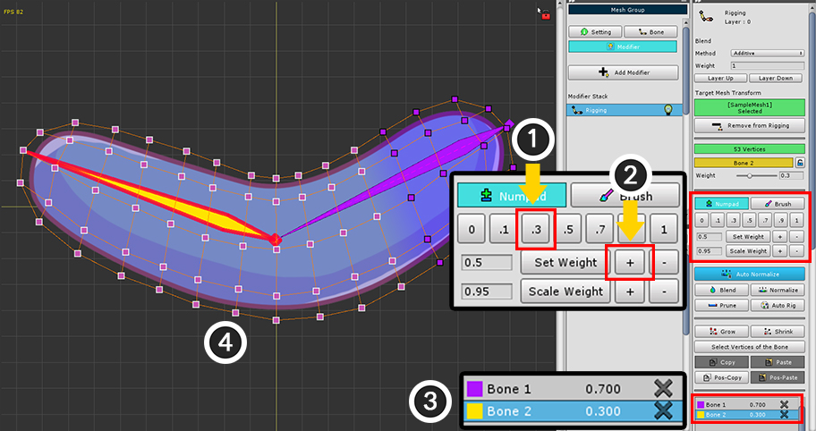
At the joint site, it is better to make the weight between the bones change smoothly.
Let's assign some weights to the currently selected vertices.
(1) Press the ".3" button in the weight tool.
(2) You can also increase the weight by pressing the "+" button several times.
(3) The rigging information about Bone 2 is added.
(4) The color of the mesh also changes slightly to the color of the second bone.
Note.
You can change the weight using the shortcuts.
Press X or Z to increase or decrease the weight by 0.02. Press Shift and press X or Z to increase or decrease weight by 0.05.
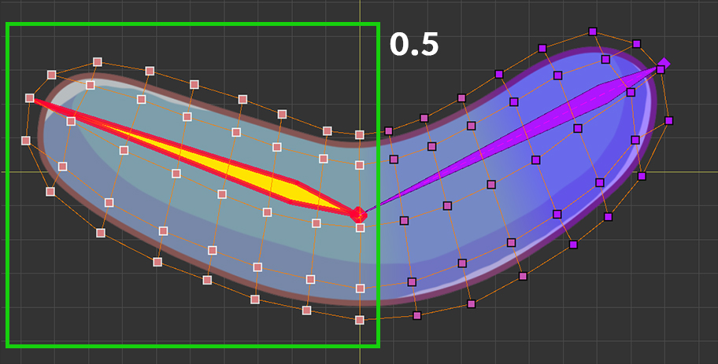
In the same way, select the vertices and set the weight for the second bone.
Select the vertices closer to the second bone than before, this time assigning a weight of 0.5.
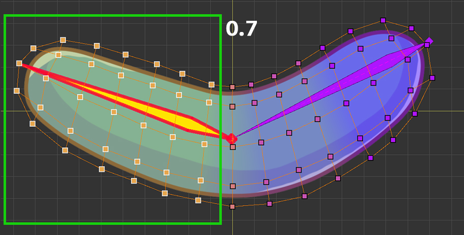
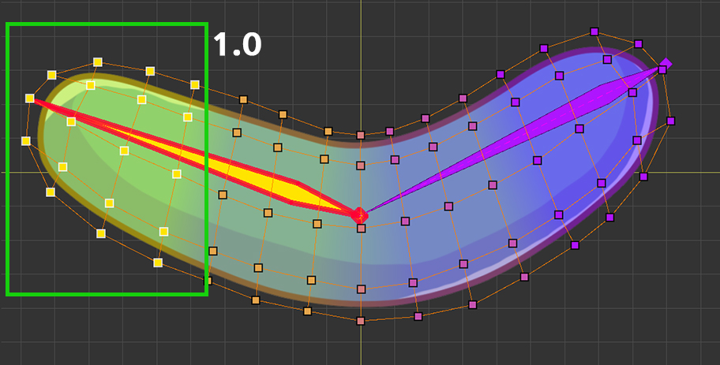
Next, select the vertices and assign more weight to the second bone.
If this weight is gradually assigned to a larger second bone, the mesh will naturally deform as the joint moves.
Manually setting weight values
The Rigging modifier provides several convenience features for setting weights.
The most basic of them will be "setting weights manually."
You can simply set the weight value in the following way.
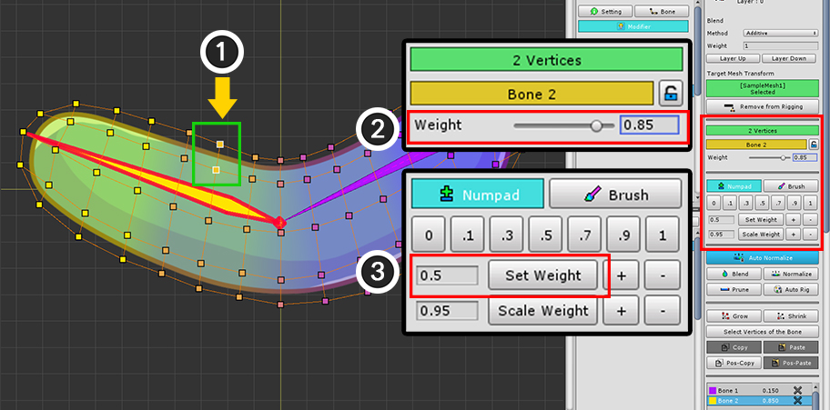
(1) Select the vertices you want to modify. (The target bone must be selected.)
There are two ways to set the weight value manually.
If there is only one vertex selected or the weights are the same for that bone (2) you can use the slider to modify the value.
(3) Or after inputting weight value to set in weight tool, press Set Weight button to assign weight.
Removing rigging information
If the weight value is zero or very small, or applied incorrectly, you may need to delete the rigging information for that bone.
Even without this, AnyPortrait removes invalid rigging information during the Bake, so there is no problem with performance.
However, if you are doing a complex rigging for many bones, it is a good idea to delete unnecessary rigging information beforehand.
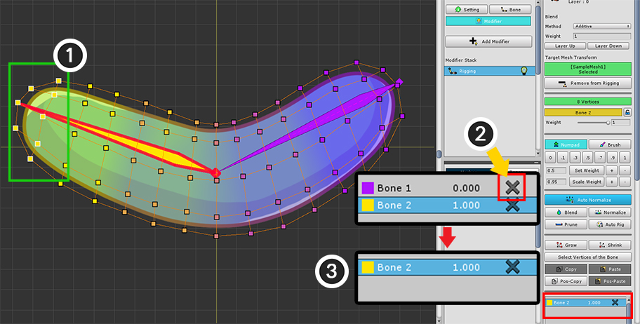
(1) Select the vertices.
(2) Press the "X" button of the rigging information you want to remove.
(3) You can see that the rigging information is removed.
Visual presentation of rigging information
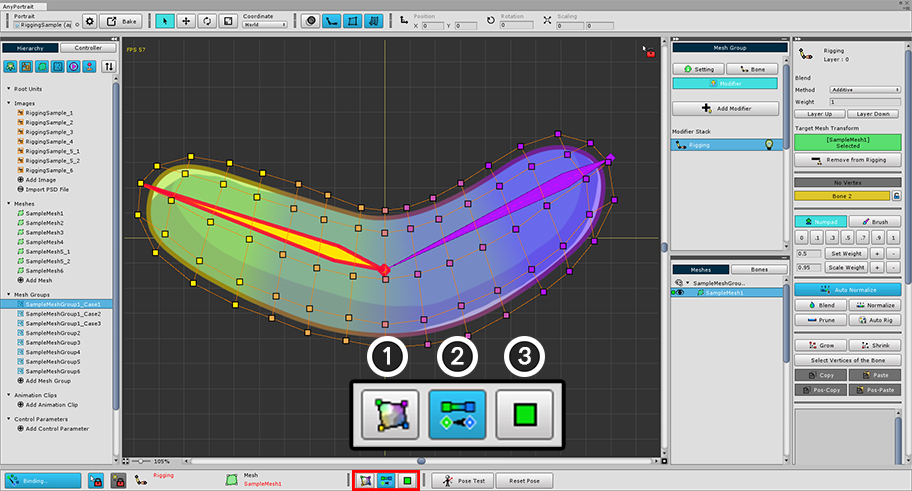
At the bottom of the screen, you can change how the rigging information looks in the workspace.
(1) Determines whether the image of the mesh is rendered with weighted colors.
(2) Decide whether the color of the bone is rendered or the weight gradation of the selected bone is rendered.
(3) Determine the appearance and color of the vertices. Weighted results can be rendered in color or in a pie chart.
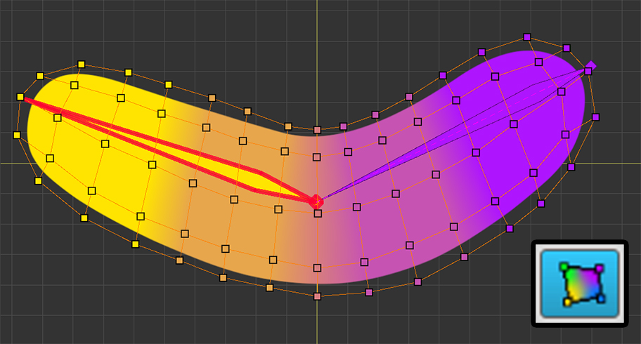
The image of the mesh is not rendered.
This method has the advantage of allowing you to visually check the exact value of the weight.
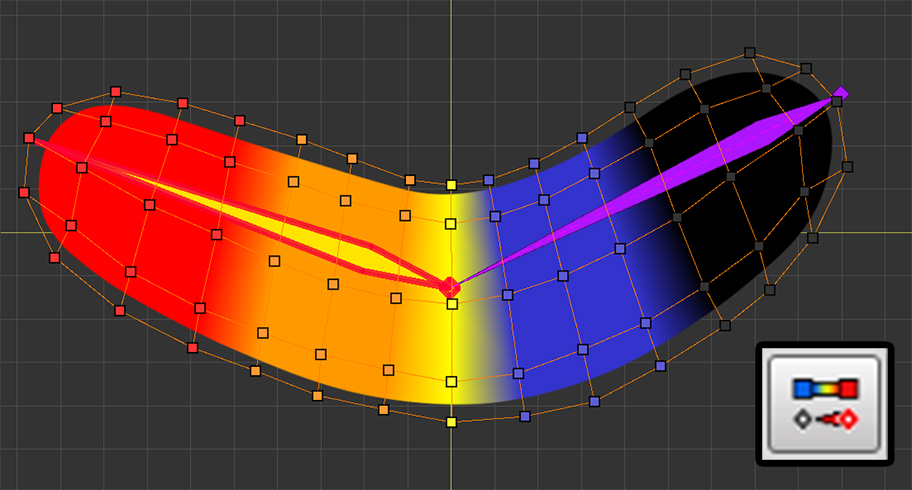
Changed weight color from "Color of Bones" to "Weight Gradation of the selected bone".
As the weight increases, it changes from blue to red.
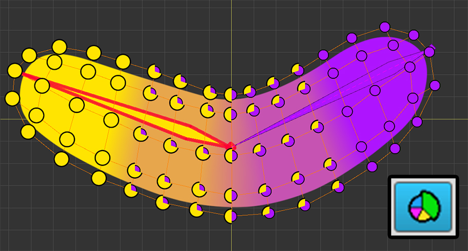
The way that vertices are rendered has been changed to "pie chart".
In this way, the vertices are rendered in a circular shape and you can see exactly the proportion of the weights in the vertices.
The area for the selected bones is shown slightly larger.
Displaying method for not linked bones
Bones connected to the mesh maybe part of all bones.
In particular, in the case of lots of bones, bones that are not assigned weights do not need to be visible during rigging work.
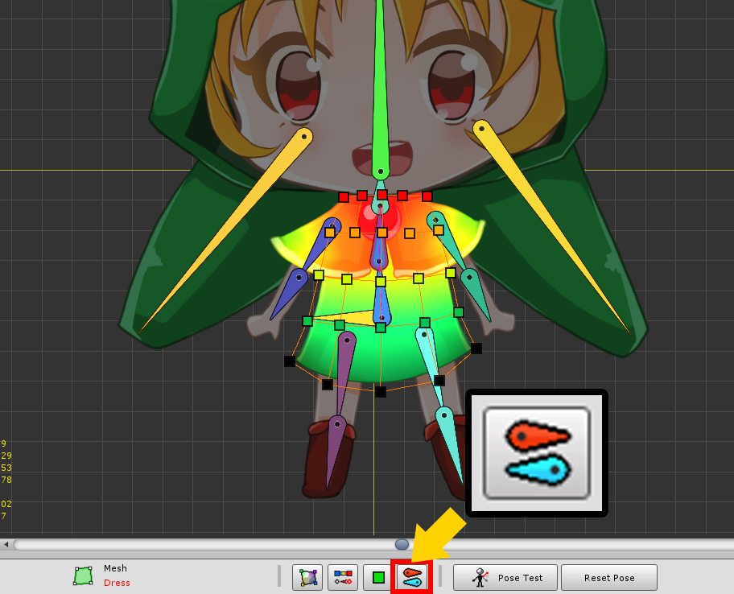
A button has been added at the bottom of the screen to set how to display unconnected bones.
By pressing this button, you can set how to show the "not linked bones with the mesh" in 3 steps.
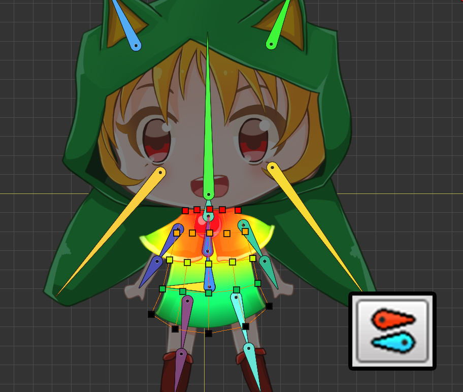
This mode shows all bones regardless of whether they are rigged or not.
Shows not linked bones in translucent gray.
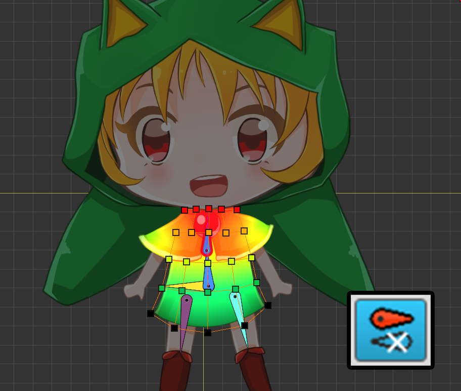
Bones that are not rigged are not rendered.
Settings related to bone appearance and rigging
You can change the bone's appearance or size, or change the color and the size of vertices associated with the rigging weights.
Create a work environment that suits you by using various options in the Setting Dialog!
Pose Test
It's hard to know if rigging worked well until you test it.
You'll need to make your character take different poses and repeat the process of modifying the rigging weights.
AnyPortrait provides the ability to test poses during rigging modifier editing to make this process easier.
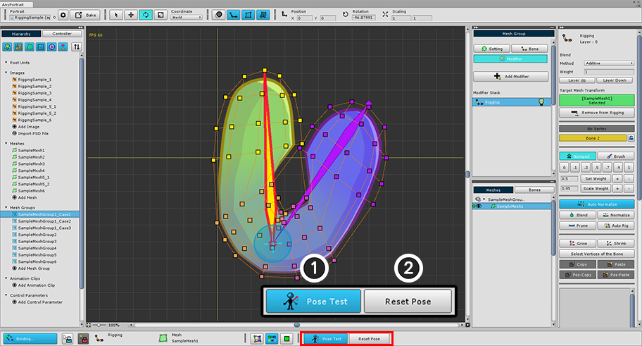
(1) Press the Pose Test button to move the bone while the rigging edit mode is on.
Press the button again to return to the original state.
(2) Press the Reset Pose button to return to the original shape while maintaining the test state.
Rigging can also be done while testing a pose.
Note that..
If a bone doesn't move right after the pose test, you can move it by selecting another bone and then selecting it again.
Rigging Tool UI

1. Add to Rigging / Remove from Rigging
: Add or remove the selected mesh to/from the Rigging modifier.
2. Information about selected vertices and bones
: Vertices and bones that are the target of the rigging are displayed, and the weight value can be modified.
- A. Index or number of selected vertices
- B. Name and lock button of the selected bone
: Lock function to fix the rigging value of bone. See the related page for the lock function.
3. Weight tool
: Functions to assign weight value directly.
- C. Numpad tab and Brush tab
: Switches between assigning values with the number pad style and editing mode using the brush.
See the related page about brush mode.
- D. Assign weight manually : The value of the button is assigned as a weight.
- E. Set Weight : Set the numeric value in the left box as weight. Press the + and - buttons to increase or decrease the weight in 0.05 increments.
- F. Scale Weight : Multiply the weight by the number in the left box. Press the + and - buttons to multiply the weight by 1.05 or 0.95.
4. Weight Assist Tools
: Functions to help set weight.
5. Vertex selection and Copy & Paste
: Auxiliary functions to select vertices and functions to copy weight values.
6. Bone Rigging Information
: The bones and weights connected to the selected vertices are displayed in a list.
Weight Assist Tools
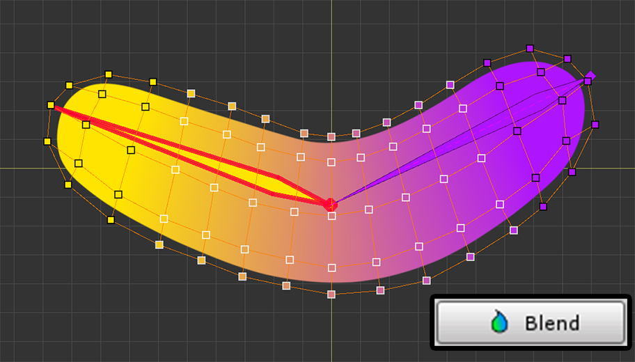
Blend
Smooths weights based on rigging information around the selected vertices.
The values are changed by the selected bones and are added automatically if there is no rigging information for the selected bones.
Blending results vary depending on which bone is selected, so we recommend blending for each bone in the joint.
Each time the button is pressed, a little bit of blending is performed.

Normalize / Auto Normalize
"Normalize" function makes the sum of the weights to one.
With "Auto Normalize" on, the weights are automatically corrected to 1 at all times.

Prune
Delete all rigging information with a weight value of zero or very small.
This is useful for deleting unnecessary rigging information.
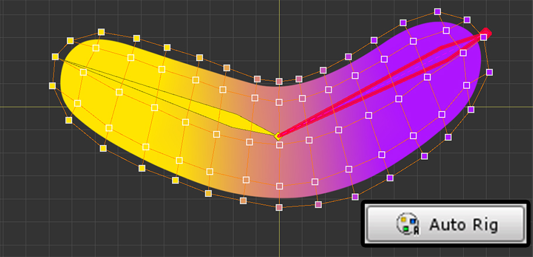
Auto Rig
This function performs rigging automatically of selected vertices
As of v1.1.8, this feature has been significantly improved.
See the related page for details.
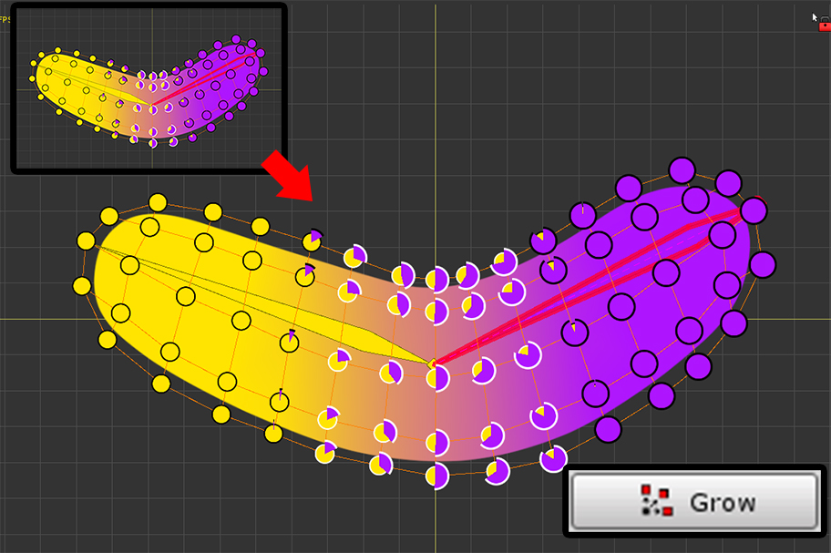
Grow
Expand one more step from the selected vertices to select more vertices.

Shrink
Select only those vertices that are one level smaller from the selected vertices.
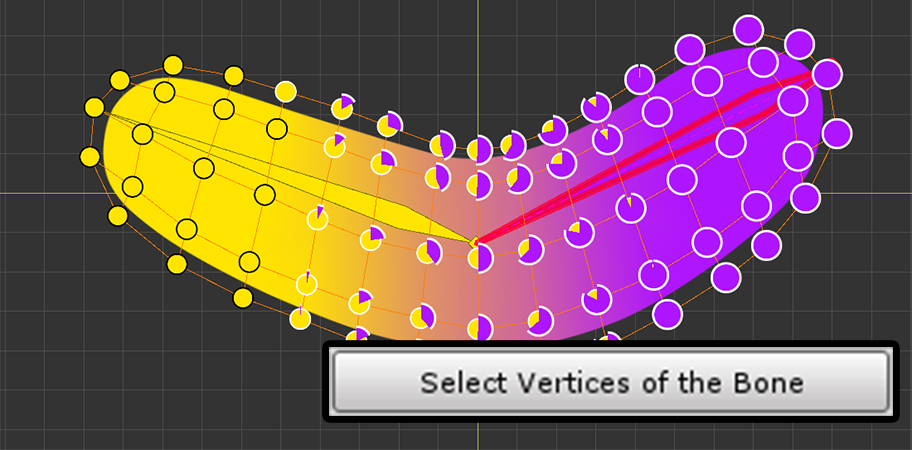
Select Vertices of the Bone
Select all vertices to which the selected bone is weighted.
Hold down the Ctrl ( Command on a Mac) and click the button to select vertices including existing selected vertices.